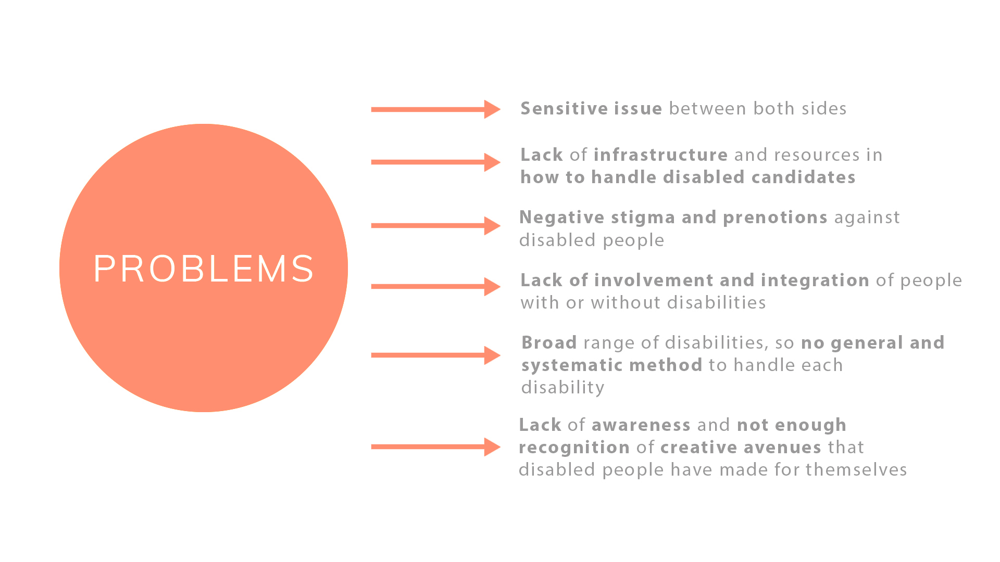

Before we can research any further, we must ask ourselves,
"What is a disability?"
Kiva Web Redesign
May 2017 - August 2018
Envision a world where all people hold the power to
create opportunity for themselves and others.
Kiva is a donating web platform that enables local banks and donors
to support local businesses by lending out finances or loans. With
family members with small businesses, the mission of this nonprofit
strongly resonates with me as I believe they encourage more
participation and support towards local businesses.
"As they said, dreams are universal, but opportunity could be
hard to come by."
create opportunity for themselves and others.
Kiva is a donating web platform that enables local banks and donors
to support local businesses by lending out finances or loans. With
family members with small businesses, the mission of this nonprofit
strongly resonates with me as I believe they encourage more
participation and support towards local businesses.
"As they said, dreams are universal, but opportunity could be
hard to come by."
Role
Skills
Tools
UI/UX Designer
User Test
Research
Sketch
Prototypes
(Low-Fi & High-Fi)
Research
Sketch
Prototypes
(Low-Fi & High-Fi)
Adobe Illustrator
Adobe Photoshop
Invision
Adobe Photoshop
Invision
INTRODUCTION

Question
How might we
Integrate people with and
without disabilities?
Integrate people with and
without disabilities?
Goals/Objectives
To implement a solution that
brings awareness and improves
inclusiveness of disabled people
in workforce and encourages
active and consistent
participation from both sides.
To create a stronger bridge and
open conversation between
abled and disabled people.
brings awareness and improves
inclusiveness of disabled people
in workforce and encourages
active and consistent
participation from both sides.
To create a stronger bridge and
open conversation between
abled and disabled people.
Audience
Disabled People
Non-Disabled People
HR Departments
Non-Disabled People
HR Departments
Constraints
Time-extensive in
rebuilding HR infrastructure.
Implementation of any solution
will take time to yield results
of progress. Mobile apps
and hosting events can be
costly.
rebuilding HR infrastructure.
Implementation of any solution
will take time to yield results
of progress. Mobile apps
and hosting events can be
costly.
Significance of Issue
As of 2017, only 18.7% of the workforce are comprised of disabled people. Diversity encompasses over a
variety of different groups, and often most than not, the disabled people group does not receive enough
recognition or support. This sensitive issue is often overlooked or not properly addressed due to the prenotions
of both parties (abled vs disabled). With diversity and inclusion being a pressing issue of today, my team and
I decided to address and tackle on this problem ourselves.
variety of different groups, and often most than not, the disabled people group does not receive enough
recognition or support. This sensitive issue is often overlooked or not properly addressed due to the prenotions
of both parties (abled vs disabled). With diversity and inclusion being a pressing issue of today, my team and
I decided to address and tackle on this problem ourselves.

RESEARCH
Step 1: Define the problems and what disability is.
"A disability is an impairment that may be cognitive, developmental, intellectual,
mental, physical, sensory, or some combination of these. It substantially affects
a person's life activities and may be present from birth or occur during a person's
lifetime."
mental, physical, sensory, or some combination of these. It substantially affects
a person's life activities and may be present from birth or occur during a person's
lifetime."
&
"Disabilities is an umbrella term, covering impairments, activity limitations,
and participation restrictions."
and participation restrictions."
Step 2: Research on current disability employment issues, analagous scenarios, general HR policies, talk with experts & disabled people
Analogous Inspiration
- Inclusivity, accessibility, reducing stigma, discrimination
- People living in rural areas
- People without access to fast wifi
- International people (accents or english-speaking skills)
in interviews - Personalities in interviewing
- Food deserts
- Second language teachers and their methods to help assimilate
non-native speakers into communities
Issues
- Only 35% of U.S. civilians with disabilities between the ages 18 and 64 had a job in 2015.
- Wyoming is the state with the highest number of employment for disabled people, which is 57%.